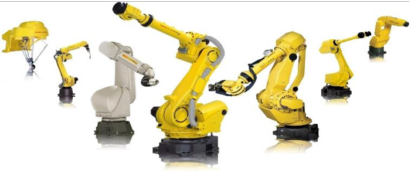
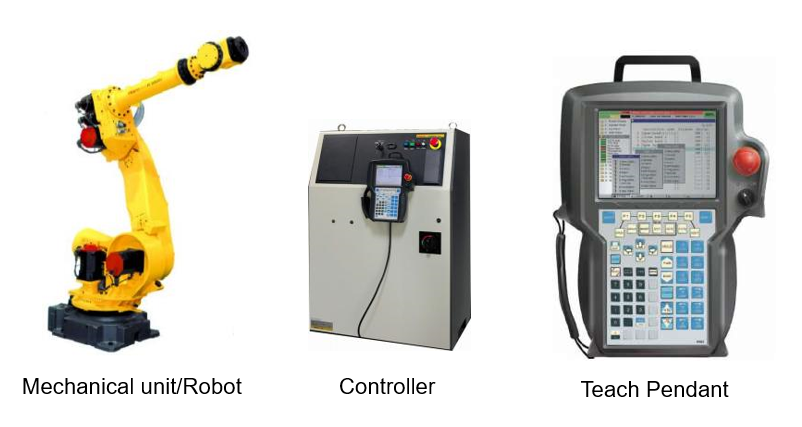
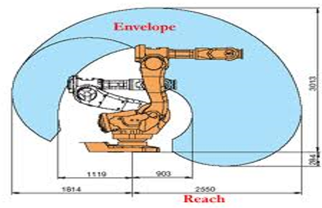

Hello, welcome to Robotic Cell!
Please find below the Standard Operating Procedure (SOP) for this station:
The field of computer science and engineering concerned with creating robots, devices that can move and react to sensory input can called as robot.
Robots have artificial intelligence they can react to situations according to their program.

Components of Robots

- There are 6 AC servo motors used for each joint. Servo motors give the same torque at any speed
- The Robot works on Positioning principle.
Pulse coders are attached to each motor which gives pulses in accordance with speed of motor. Its unit is PPR (Pulses Per Revolution. In our case 1RPM =5000PPR). These pulses are send to controller according to which controller performs the work. For alternative Resolvers are used but The Pulse coders have the maximum accuracy.
There are 2 types of pulse coders used in our robot. They are as follows:
- Incremental Pulse Coder: Incremental has the volatile memory i.e. the no. of pulses generated by it get lost after power off. And again it starts from zero after power comes.
- Absolute: Absolute has a separate RAM memory which counts PPR and record it. It also monitors the direction of motion.
Payload: Payload is the weight the robot can lift. Payload includes the weight of the End of Arm Tooling (EOAT) and the weight of the product being picked. The payload is easier to measure and easier to calculate.
Robot Inertia:
Inertia is a property of matter where the object resists changes in velocity (speed and/or direction). Inertia is calculated using the mass of the End of Arm Tooling and product, the center of gravity of those items, and the distance from the robot face plate to the center of gravity. The inertia requires multiple measurements, calculations, and is unintuitive.
Robot reach is the distance from the center of the robot to the fullest extension of the robotic arm. This measurement determines the robot's work envelope. Robot Worx makes it easy to shop for robots based on the maximum reach.
Currently, FANUC's longest reach robot can reach 4684mm, Motorman's longest reach robot can reach 4004mm, ABB's longest reach robot can reach 4200mm, and KUKA's longest reach robot can reach 3500mm

Coordinate Systems in Robotics
A coordinate system defines a plane or space by axes originating from a fixed point known as the origin. In the realm of robotics, coordinate systems play a critical role in locating robot targets and positions. Robots utilize several coordinate systems, each designed for specific tasks like jogging or programming.
The primary coordinate systems in robotics include:
- Base Coordinate System: This system has its origin at the robot's base, making it suitable for fixed-mounted robots. It ensures predictable movements and is ideal for tasks involving jogging the robot between positions.
- Work Object Coordinate System: When programming a robot, the work object coordinate system is often the preferred choice. It is selected based on the specific task at hand.
- Tool Coordinate System (TCPF): The tool coordinate system defines the position and orientation of the robot's tool. It is abbreviated as TCPF (Tool Center Point Frame), with its origin at the center point of the tool (abbreviated as TCP).
Jogging the Robot in a Robotic System
In a robotic system, you may need to jog the robot under various circumstances:
- The robot is in an unexpected position.
- The robot's position needs adjustment for maintenance and preventive maintenance (PM).
- Programming is required to teach points and test motion.
It's essential to note that when jogging the robot, the controller key switch should be set to either T1 or T2, not AUTO. If the controller key is turned to teach mode after the DEADMAN switch is held in, it can result in a robot fault. For safe jogging, all safety systems must be in the green state, and all faults must be clear.
The robot can be jogged using different coordinate systems:
- Joint: This coordinate system allows individual or simultaneous jogging of each joint.
- S/World: It moves the robot's Tool Center Point (TCP) in the x, y, or z directions and allows rotation about x (w), y (p), or z (r) axes.
- S/Tool: This coordinate system moves the robot's TCP in the x, y, or z direction and allows rotation about x (w), y (p), and z (r) axes in the selected tool frame.